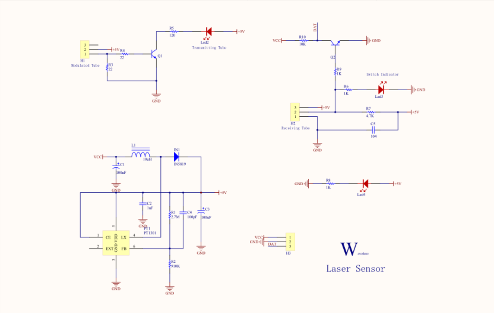
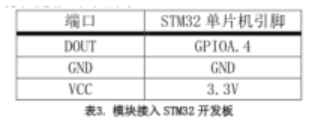
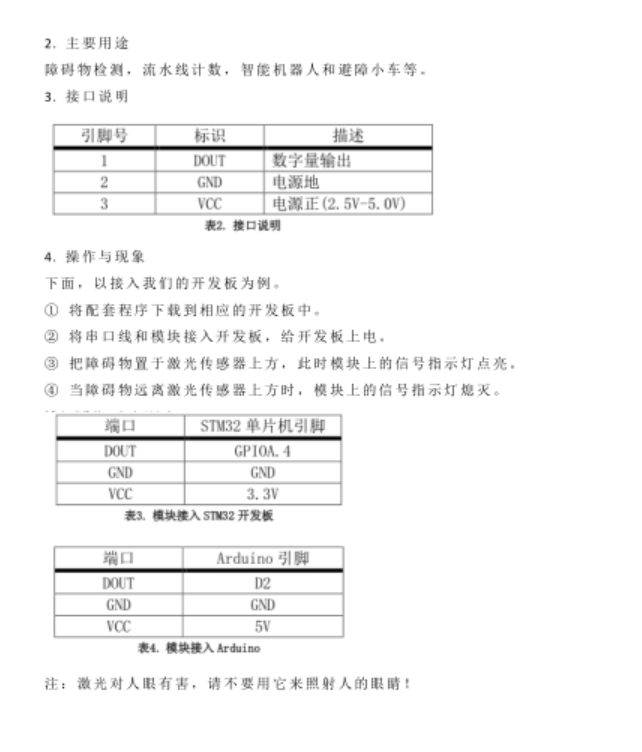
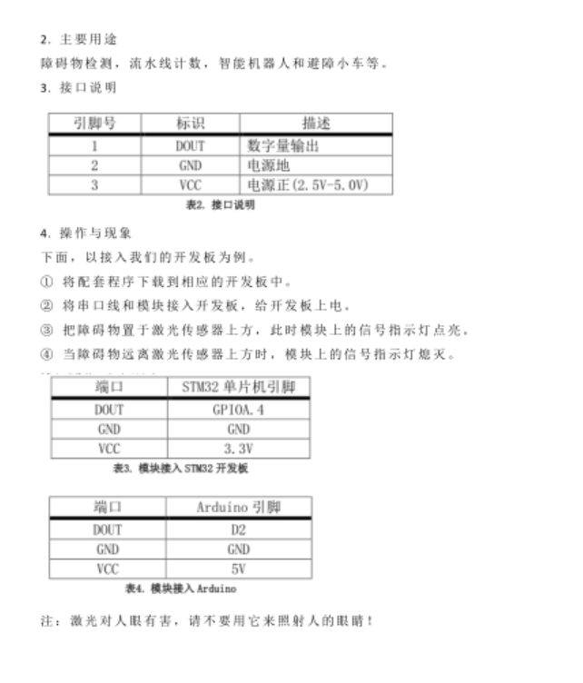

激光传感器
功能介绍
利用激光技术进行测量的传感器，主要用于障碍物检测，流水线计数，智能机器人和避障小车。
工作原理
激光传感器的发射部分是由一个震荡管发出 180KHz 频率的震荡波后，</br> 经三极管放大，激光管发光，接收部分由一个相匹配 180KHz 的接收管接收返回的光强。</br> 由于激光传感器使用了调制处理，接收管只能接受相同频率的反射光，因此可有效防止可见光对反射激光的影响。</br> PT1301升压芯片 是一款最低启动电压可低于1V的小尺寸高效率升压DC/DC转换器，</br> DC/DC转换器的意思就是：直流电压转换，输入直流12V，此时该芯片通过一些阻容件，就可组装一款输出为直流6v的稳压电源。
型号及实物照片
Laser Sensor
电路图，接线图


性能描述
Laser Sensor激光传感器将光信号转化成电信号，可以检测障碍物，进行躲避。
基本驱动代码
/* Private define ------------------------------------------------------------*/
#define ADC1_DR_Address ((u32)0x4001244C)
/* Private function prototypes -----------------------------------------------*/
void USART_Configuration(void);
void ADC_Configuration(void);
/* Private variables ---------------------------------------------------------*/
float AD_value;
vu16 ADC_ConvertedValue;
void user_gpio_init(void)
{
GPIO_InitTypeDef GPIO_InitStructure;
RCC_APB2PeriphClockCmd(RCC_APB2Periph_GPIOA,ENABLE);
GPIO_InitStructure.GPIO_Pin=GPIO_Pin_4;
GPIO_InitStructure.GPIO_Mode=GPIO_Mode_IPU;
GPIO_Init(GPIOA,&GPIO_InitStructure);
}
/*******************************************************************************
* Function Name : main
* Description : Main program
* Input : None
* Output : None
* Return : None
* Attention : None
*******************************************************************************/
int main(void)
{
Delay_Init();
usart_Configuration();
ADC_Configuration();
user_gpio_init();
printf("\r\n****************************************************************\r\n");
/* Infinite loop */
while (1)
{
if(GPIO_ReadInputDataBit(GPIOA,GPIO_Pin_4))
printf("The Obstacles is far!\r\n");
else
printf("The Obstacles is near!\r\n");
Delay(100); /* delay 1000ms */
}
}
/*******************************************************************************
* Function Name : ADC_Configuration
* Description : Configure the ADC.
* Input : None
* Output : None
* Return : None
* Attention : None
*******************************************************************************/
void ADC_Configuration(void)
{
ADC_InitTypeDef ADC_InitStructure;
DMA_InitTypeDef DMA_InitStructure;
GPIO_InitTypeDef GPIO_InitStructure;
RCC_AHBPeriphClockCmd(RCC_AHBPeriph_DMA1, ENABLE);
RCC_APB2PeriphClockCmd(RCC_APB2Periph_ADC1 | RCC_APB2Periph_GPIOA | RCC_APB2Periph_AFIO, ENABLE);
/* Configure PA.06 (ADC Channel6), PA.07 (ADC Channel7) as analog input -------------------------*/
GPIO_InitStructure.GPIO_Pin = GPIO_Pin_6 | GPIO_Pin_7;
GPIO_InitStructure.GPIO_Speed = GPIO_Speed_50MHz;
GPIO_InitStructure.GPIO_Mode = GPIO_Mode_AIN;
GPIO_Init(GPIOA, &GPIO_InitStructure);
/* DMA channel1 configuration ----------------------------------------------*/
DMA_DeInit(DMA1_Channel1);
DMA_InitStructure.DMA_PeripheralBaseAddr = ADC1_DR_Address;
DMA_InitStructure.DMA_MemoryBaseAddr = (u32)&ADC_ConvertedValue;
DMA_InitStructure.DMA_DIR = DMA_DIR_PeripheralSRC;
DMA_InitStructure.DMA_BufferSize = 1;
DMA_InitStructure.DMA_PeripheralInc = DMA_PeripheralInc_Disable;
DMA_InitStructure.DMA_MemoryInc = DMA_MemoryInc_Disable;
DMA_InitStructure.DMA_PeripheralDataSize = DMA_PeripheralDataSize_HalfWord;
DMA_InitStructure.DMA_MemoryDataSize = DMA_MemoryDataSize_HalfWord;
DMA_InitStructure.DMA_Mode = DMA_Mode_Circular;
DMA_InitStructure.DMA_Priority = DMA_Priority_High;
DMA_InitStructure.DMA_M2M = DMA_M2M_Disable;
DMA_Init(DMA1_Channel1, &DMA_InitStructure);
/* Enable DMA1 channel1 */
DMA_Cmd(DMA1_Channel1, ENABLE);
/* ADC1 configuration ------------------------------------------------------*/
ADC_InitStructure.ADC_Mode = ADC_Mode_Independent;
ADC_InitStructure.ADC_ScanConvMode = ENABLE;
ADC_InitStructure.ADC_ContinuousConvMode = ENABLE;
ADC_InitStructure.ADC_ExternalTrigConv = ADC_ExternalTrigConv_None;
ADC_InitStructure.ADC_DataAlign = ADC_DataAlign_Right;
ADC_InitStructure.ADC_NbrOfChannel = 1;
ADC_Init(ADC1, &ADC_InitStructure);
/* ADC1 regular channel6 configuration */
ADC_RegularChannelConfig(ADC1, ADC_Channel_6, 1, ADC_SampleTime_239Cycles5);
/* Enable ADC1 DMA */
ADC_DMACmd(ADC1, ENABLE);
/* Enable ADC1 */
ADC_Cmd(ADC1, ENABLE);
/* Enable ADC1 reset calibaration register */
ADC_ResetCalibration(ADC1);
/* Check the end of ADC1 reset calibration register */
while(ADC_GetResetCalibrationStatus(ADC1));
/* Start ADC1 calibaration */
ADC_StartCalibration(ADC1);
/* Check the end of ADC1 calibration */
while(ADC_GetCalibrationStatus(ADC1));
/* Start ADC1 Software Conversion */
ADC_SoftwareStartConvCmd(ADC1, ENABLE);
}
#ifdef USE_FULL_ASSERT
/**
* @brief Reports the name of the source file and the source line number
* where the assert_param error has occurred.
* @param file: pointer to the source file name
* @param line: assert_param error line source number
* @retval None
*/
void assert_failed(uint8_t* file, uint32_t line)
{
/* User can add his own implementation to report the file name and line number,
ex: printf("Wrong parameters value: file %s on line %d\r\n", file, line) */
/* Infinite loop */
while (1)
{
}
}
#endif
产品手册
 
